| Res | Horse | Price | BSP | Dr | Form | Crse | Suit | OR | Spd | TF | Last comment |
|---|---|---|---|---|---|---|---|---|---|---|---|
| 1 | 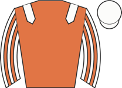 Classy Clarets ◆ 2 ★ EYE | 3.25 | - | 5 | 1-3-2-4-5-1 | 1r | trip✓ trk✓ | 55 | 96 | ★★★☆☆ | Soon raced in second, raced keenly and led after end of first furlong, set strong pace, pu |
| 7 | 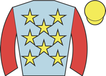 Filey Beach ◆ 1 M2 | 3.75 | - | 9 | 12-8-4-1-1-3 | 2r 2W | trip✓ trk✓ | 59 ↓ | 96 | ★★★★☆ | Led, headed after 1f, chased leaders 2f out, ran o well., led inside final 110yds, headed |
| 3 | 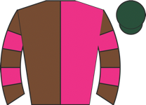 Coconut Bay ⚠ ground | 5.50 | - | 3 | 7-8-3-11-7-4 | 2r | trk✓ | 54 ↓ | 94 | ★★★★☆ | Raced wide and soon led, headed after end of first furlong, ridden to chase winner from 2f |
| 2 | 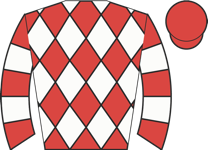 Indy's Angel | 5.50 | - | 6 | 8-7-8-8-11-2 | 2r | going✓ | 45 | 95 | ★★★☆☆ | Prominent, asked for effort to challenge over 1f out, pressed winner near finish but held |
| 6 | 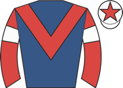 Saisons D'Or ◆ 3 | 11.00 | - | 4 | 7-10-4-1-5-7 | 1r | trip✓ trk✓ | 60 | 97 | ★★★☆☆ | Led, headed over 1f out, soon outpaced, weakened quickly inside final furlong |
| 4 | Jenni ⚠ ground | 21.00 | - | 2 | 8-3-8-14-9-10 | 1r | 60 ↓ | 90 | ★★★★★ | Held up in rear, asked for effort over 2f out, never involved | |
| 8 | 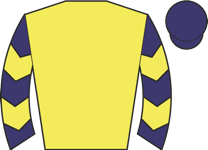 Groundsman | 26.00 | - | 7 | 1-3-6-3-8-5 | trip✓ trk✓ | 59 | 89 | ★★☆☆☆ | Took keen hold, prominent, lost position 2f out, soon asked for effort and weakened | |
| 5 | 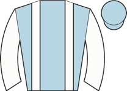 Summer Rain ⚠ ground | 26.00 | - | 1 | 4-10-7-13-5-9 | 45 ↓ | 95 | ★★☆☆☆ | Close up, shaken up over 2f out, soon faded | ||
| 9 | 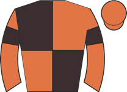 Without Delay ⚠ ground | 26.00 | - | 8 | 10-11-5-3-10-7 | 2r 1p | trk✓ | 47 ↓ | 90 | ★★☆☆☆ | Towards rear, raced wide and some headway 3f out, ridden when outpaced over 1f out, weaken |
| Res | Horse | Price | BSP | Dr | Form | Crse | Suit | OR | Spd | TF | Last comment |
|---|---|---|---|---|---|---|---|---|---|---|---|
| 2 | 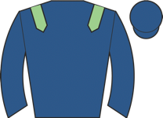 Bellatina ◆ 2 ⚠ draw ▼ cls | 3.00 | - | 4 | 2-8-7-2 | going✓ trip✓ trk✓ | 65 | 92 | ★★★★☆ | Led, headed over 2f out, no impression on winner final 110 yards | |
| 5 | 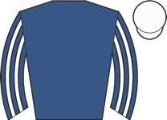 Najmet Minzaal ◆ 3 ▼ cls | 4.50 | - | 2 | 4-4 | draw✓ | 65 | 93 | Early pace, contested lead, ridden over 2f out, headed 2f out, weakened 1f out | ||
| 3 | 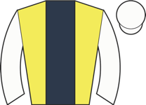 Mardy Bum ⚠ ground ▼ cls | 6.00 | - | 3 | 6-7-4 | draw✓ | 62 | 92 | ★★★☆☆ | Mounted in chute and taken down early, restless in stalls, slow into stride, towards rear, | |
| 4 | 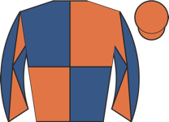 Lairy Mary ◆ 1 ▼ cls | 9.00 | - | 7 | 10-3-6-1-6 | going✓ trip✓ trk✓ | 60 | 94 | ★★★☆☆ | Took keen hold, midfield on outer, made headway over 2f out, soon ridden along, faded insi | |
| 1 | 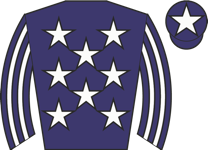 Penny Capri ▼ cls | 11.00 | - | 1 | 6-6-5 | draw✓ | 63 | 91 | ★★★★☆ | Slowly into stride, soon chased leaders, ridden 2f out, weakened over 1f out | |
| 8 | 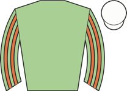 Arcadian Days ⚠ ground ▼ cls | 11.00 | - | 8 | 7-8-6 | 53 | 92 | ★★★☆☆ | Wore hood to post, prominent, shaken up 2f out, weakened over 1f out | ||
| 6 | 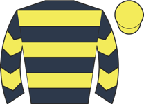 Mr Darling ⚠ draw ▼ cls | 13.00 | - | 5 | 10-6-6 | 48 | 87 | ★★★☆☆ | Midfield, pushed along 2f out, outpaced over 1f out, soon weakened | ||
| 7 | 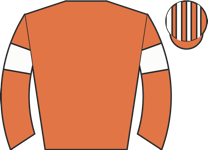 Explainingislosing ▼ cls | 15.00 | - | 9 | 5-3-8-13 | trk✓ | 54 | 90 | ★★☆☆☆ | Prominent, ridden 2f out, weakened 1f out | |
| 9 | 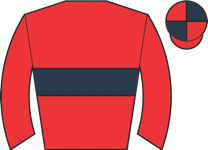 Fortunate ⚠ draw ▼ cls | 26.00 | - | 6 | 6-13-10-4-5 | 60 | 85 | ★★☆☆☆ | Led, ridden and headed over 1f out, soon weakened |
| Res | Horse | Price | BSP | Dr | Form | Crse | Suit | OR | Spd | TF | Last comment |
|---|---|---|---|---|---|---|---|---|---|---|---|
| 3 | Big Hitter ◆ 2 ★ EYE ▼ cls | 2.50 | - | 2 | 2-2 | going✓ trip✓ | 76 | 93 | Prominent, chased leading pair over 1f out, came towards near side inside final furlong, r | ||
| 6 | Time Glory ▼ cls | 3.50 | - | 6 | 4-3 | trk✓ | 73 | 92 | Wore hood to post, led, ridden and headed 2f out, two lengths down entering final furlong, | ||
| 1 | 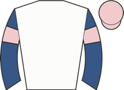 Warby ◆ 1 ▼ cls | 5.00 | - | 1 | 2 | 1r 1p | going✓ trip✓ trk✓ | 95 | In touch with leaders, led over 2f out, ridden when headed over 1f out, pestered for secon | ||
| 2 | 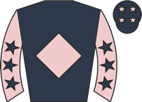 Inglewood ◆ 3 ▼ cls | 9.00 | - | 3 | 5 | 96 | Wore red hood to post, handy, pushed along 2f out, weakened closing stages | ||||
| 4 | 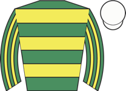 Angel In My Heart | 9.00 | - | 4 | unraced | - | |||||
| 5 | Ma Fille De Reve ▼ cls | 34.00 | - | 5 | 6-6 | 1r | 92 | In rear, modest headway inside final furlong, kept on |
| Res | Horse | Price | BSP | Dr | Form | Crse | Suit | OR | Spd | TF | Last comment |
|---|---|---|---|---|---|---|---|---|---|---|---|
| 5 | 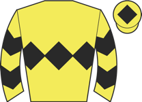 Dacres Cross ▼ cls | 5.00 | - | 2 | 1-17-7-6-11-4 | going✓ trk✓ | 68 | 88 | ★★★★★ | Mid-division, pushed along over 2f out and improved, hung left over 1f out, disputed secon | |
| 8 | 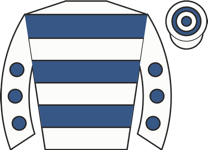 Starryfield ◆ 1 M2 ▼ cls | 5.50 | - | 8 | 2-2-3-7-3 | going✓ trk✓ | 72 | 91 | ★★★☆☆ | Wore hood to start, led, pushed along after 2f, headed 2f out, ridden over 1f out, soon we | |
| 2 | 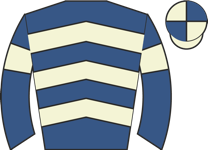 Masaban ◆ 2 | 6.00 | - | 7 | 5-8-6-1-3-5 | trk✓ | 69 ↑ | 91 | ★★★★☆ | Soon raced in second, pushed along and briefly led over 1f out, soon headed, weakened quic | |
| 7 | 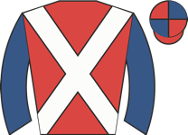 Harswell Angel ⚠ ground ▼ cls | 6.00 | - | 10 | 7-4-8-8-8-5 | 67 ↓ | 90 | ★★★★☆ | Dwelt, mid-division, pushed along over 2f out, stayed on, no real impression | ||
| 3 | 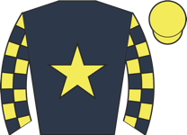 Indefensible ⚠ ground ▼ cls | 7.50 | - | 9 | 3-6-2-7-2-5 | trip✓ trk✓ | 72 | 93 | ★★★☆☆ | Midfield, asked for effort over 1f out, plugged on without threatening | |
| 1 | 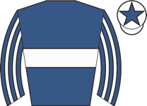 Beyond The Bar | 11.00 | - | 3 | 2-1-6-7-7-5 | 1r 1p | going✓ trip✓ trk✓ | 72 ↓ | 93 | ★★★☆☆ | Disputed lead, ridden and headed 2f out, weakened final furlong |
| 6 | 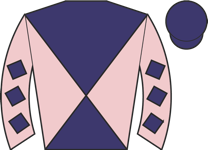 Master Of Entropy ◆ 3 | 13.00 | - | 4 | 9-3-5-6-4 | trk✓ | 72 | 91 | ★★☆☆☆ | Edged left start, chased leaders, pushed along over 2f out, weakened final 110 yards | |
| 0 | 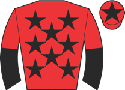 Bye Law ⚠ ground ▼ cls | 13.00 | - | 5 | 6-6-13-3-3-13 | trk✓ | 67 ↓ | 92 | ★★★☆☆ | Prominent, ridden along over 2f out, weakened over 1f out | |
| 4 | 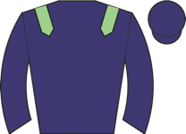 Vega Storm ⚠ ground ▼ cls | 13.00 | - | 1 | 3-3-5-10 | 1r | trk✓ | 65 | 93 | ★★★☆☆ | Mid-division, pushed along 2f out, no response |
| 9 | Magistery | 26.00 | - | 6 | 2-6-1-5-15-11 | trk✓ | 69 | 85 | ★★☆☆☆ | Raced centre, in touch with leaders, ridden over 2f out, soon weakened |
| Res | Horse | Price | BSP | Dr | Form | Crse | Suit | OR | Spd | TF | Last comment |
|---|---|---|---|---|---|---|---|---|---|---|---|
| 4 | Not So Sobers ◆ 1 ▼ cls | 2.00 | - | 6 | 3-6-10-1-1-- | 1r 1W | going✓ trip✓ trk✓ | 63 ↑ | 77 | ★★★★★ | Led, ridden and headed after 2 out, soon weakened quickly, pulled up before last |
| 3 | 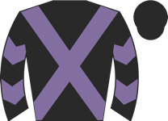 Bunker Bay ◆ 2 ▼ cls | 3.25 | - | 2 | 3-2-8-1-1-2 | 62 ↑ | 62 | ★★★★☆ | Prominent, led 1st, pushed along before 2 out, headed after 2 out, kept on but no match fo | ||
| 1 | 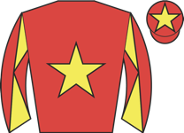 Sugarpiehoneybunch | 9.00 | - | 3 | 4-5-7-7-8-7 | 1r | 47 | 90 | ★★★☆☆ | Held up in rear, modest headway 2f out, outpaced over 1f out, weakened inside final furlon | |
| 2 | 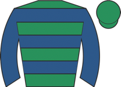 Speechman ⚠ ground | 9.00 | - | 5 | 7-11-9-8-8-3 | trk✓ | 49 ↓ | 83 | ★★☆☆☆ | Slowly into stride, in touch towards rear, pushed along over 3f out, third and no impressi | |
| 0 | 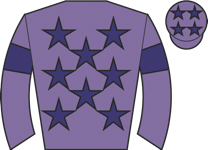 Himself ◆ 3 | 17.00 | - | 4 | 1-1-5-8-6-5 | 1r | trk✓ | 54 | 81 | ★★☆☆☆ | Held up in rear, pushed along early, ridden to make headway 2f out, outpaced over 1f out, |
| 5 | 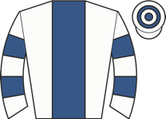 Lady Buttercup ⚠ ground | 26.00 | - | 1 | 5-10-5-4-7-11 | 1r | 48 ↓ | 81 | ★★☆☆☆ | Took keen hold, close up, pressed leader over 3f out, ridden over 2f out, faded over 1f ou |
| Res | Horse | Price | BSP | Dr | Form | Crse | Suit | OR | Spd | TF | Last comment |
|---|---|---|---|---|---|---|---|---|---|---|---|
| 1 | 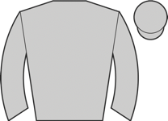 Velvet Rhythm ◆ 1 ★ EYE | 3.00 | - | 2 | 3-1-1-4-8-1 | 2r 2W | going✓ trip✓ trk✓ | 72 | 94 | ★★★★☆ | Wore earplugs to start, held up in rear, ridden and headway 2f out, chased leader entering |
| 5 | 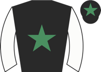 Only Dream Big M2 ▲ cls | 3.50 | - | 5 | 8-4-5-8-1-1 | trip✓ trk✓ | 65 | 96 | ★★★★★ | Handy in second, pushed along well over 2f out, ran on to strongly press leader 1f out, di | |
| 2 | 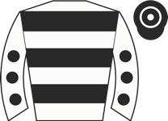 Lady Gormire ◆ 2 ▼ cls | 5.00 | - | 1 | 2-8-2-3 | 2r 2p | going✓ trk✓ | 68 | 95 | ★★★☆☆ | Wore hood to post, went left start, took keen hold, led but pestered, ridden 2f out, led n |
| 4 | 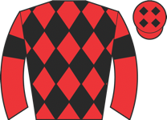 Donna Nook ◆ 3 ▼ cls | 8.00 | - | 3 | 3-2-9-4-1-4 | going✓ trk✓ | 73 | 92 | ★★★☆☆ | Led, ridden 2f out, headed over 1f out, stayed on one pace inside final furlong | |
| 3 | 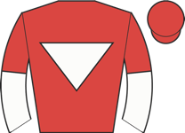 Rogue Citation | 8.00 | - | 4 | 3-1-6 | trk✓ | 72 | 91 | ★★★☆☆ | Wore hood to post, held up in rear, shaken up over 2f out, edged left when ridden over 1f | |
| 6 | 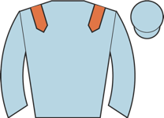 Ziggy's Queen ⚠ ground | 15.00 | - | 6 | 2-1-7-9-8-5 | 1r | trip✓ trk✓ | 72 | 92 | ★★☆☆☆ | Wore hood to start, midfield, ridden over 2f out, lost position over 1f out, faded inside |
| Res | Horse | Price | BSP | Dr | Form | Crse | Suit | OR | Spd | TF | Last comment |
|---|---|---|---|---|---|---|---|---|---|---|---|
| 4 | Dream Illusion ◆ 3 ★ EYE | 3.25 | - | 8 | 1-8-6-2-12-2 | going✓ trip✓ trk✓ | 68 | 92 | ★★★★★ | Held up in midfield, steady headway on inner over 2f out, challenging over 1f out, kept on | |
| 3 | 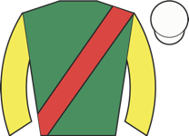 Lovers Leap M2 | 5.00 | - | 5 | 4-6-3-1-6 | going✓ trip✓ trk✓ draw✓ | 70 | 89 | ★★★☆☆ | Wore red hood to post, led, ridden 2f out, headed over 1f out, faded over 110yds out | |
| 1 | 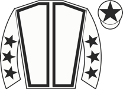 Allegrino ◆ 2 | 6.00 | - | 3 | 8-2-3-1-2-3 | trip✓ trk✓ draw✓ | 67 | 90 | ★★★★☆ | Keen in rear, ridden over 1f out, stayed on same pace inside final furlong, took third tow | |
| 7 | 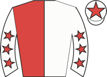 Fantasy Obsessor ◆ 1 ★ EYE ⚠ draw | 7.00 | - | 2 | 5-11-2-2-5-2 | 1r 1p | going✓ trk✓ | 65 | 94 | ★★★★☆ | Went to post early wearing hood, slowly away, in rear, ridden and headway 2f out, stayed o |
| 8 | 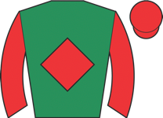 Ironist ⚠ draw | 7.00 | - | 1 | 1-4-4-3-5-8 | 4r 1W | trk✓ | 68 | 92 | ★★★☆☆ | Wore red hood to post, mid-division, pushed along under 3f out and improved, ridden chasin |
| 6 | Galileo Charm ⚠ ground | 11.00 | - | 4 | 3-2-1-4-7-7 | trip✓ trk✓ draw✓ | 66 | 88 | ★★★☆☆ | Prominent, ridden over 2f out, kept on same pace inside final furlong | |
| 2 | 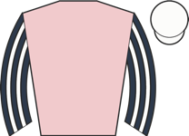 Izzy Fast ⚠ ground ▼ cls | 15.00 | - | 7 | 9-5-1-9-7 | 3r 1W | trk✓ | 68 | 91 | ★★☆☆☆ | In touch, shaken up over 3f out, ridden along and made brief headway 2f out, weakened over |
| 5 | 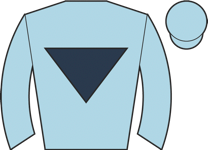 Angels' Share ⚠ ground | 21.00 | - | 6 | 1-1-13-8-9-8 | 1r | trip✓ | 69 | 92 | ★★☆☆☆ | Wore hood to post, in rear, ridden 3f out, always outpaced, wound to right fore |
| Res | Horse | Price | BSP | Dr | Form | Crse | Suit | OR | Spd | TF | Last comment |
|---|---|---|---|---|---|---|---|---|---|---|---|
| 3 | 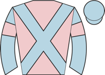 Holi Scarlett ◆ 1 ★ EYE ▼ cls | 3.75 | - | 8 | 7-6-3-1 | going✓ trip✓ trk✓ draw✓ | 64 | 92 | ★★★★☆ | Mounted in chute, prominent near side, headway 2f out, edged left when took second 1f out, | |
| 1 | 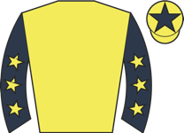 Dubai Charm ◆ 2 ▼ cls | 5.00 | - | 7 | 2-3-20 | 1r 1p | going✓ trk✓ draw✓ | 75 | 91 | ★★★☆☆ | Wore hood to post, bumped start, took keen hold, in touch with leaders, ridden over 2f out |
| 4 | Fly Test | 5.50 | - | 2 | 11-8-2 | going✓ trip✓ | 72 | 92 | ★★★☆☆ | Wore hood to post, chased leaders, pushed along over 1f out, soon went second, ridden to c | |
| 7 | 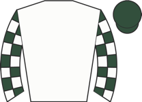 Or Another ⚠ draw ▼ cls | 6.00 | - | 3 | 3-4 | trk✓ | 69 | 90 | Pressed leaders towards stands side, led briefly 2f out, no extra inside final 110 yards, | ||
| 2 | My Maria ◆ 3 ⚠ draw ▼ cls | 8.00 | - | 4 | 4-3 | 67 | 92 | Led, ridden and headed over 1f out, plugged on inside final furlong, no danger to leaders | |||
| 5 | 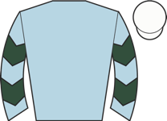 Cydney Sweenie | 8.00 | - | 1 | 4-3-8 | trk✓ | 66 | 89 | ★★★☆☆ | In touch with leaders, ridden over 2f out, weakened entering final furlong | |
| 6 | Sable Island ▼ cls | 17.00 | - | 6 | 3-3-7 | trk✓ draw✓ | 68 | 91 | ★★★☆☆ | Took keen hold, in touch with leaders, ridden 2f out, soon weakened | |
| 8 | Miss U Gino ⚠ draw ⚠ ground | 26.00 | - | 5 | 5-10-10 | 1r | 57 | 89 | ★★☆☆☆ | Towards rear, ridden over 2f out, never in contention |
| Res | Horse | Price | BSP | Dr | Form | Crse | Suit | OR | Spd | TF | Last comment |
|---|---|---|---|---|---|---|---|---|---|---|---|
| 1 | Starlight Lass ◆ 2 | 2.20 | - | 1 | 2-1 | 1r 1p | going✓ trip✓ trk✓ | 86 | Made all, unchallenged, comfortably | ||
| 0 | Dream Vega | 3.00 | - | 2 | 4-2 | trk✓ | 95 | In touch with leaders, ridden and headway to press winner entering final furlong, kept on | |||
| 2 | Raneem ◆ 1 | 3.75 | - | 3 | 1 | trk✓ | 100 | Wore hood to post, held up in midfield, headway and ridden 2f out, kept on and led narrowl | |||
| 3 | Sakura Impact ◆ 3 | 34.00 | - | 4 | unraced | - |
| Res | Horse | Price | BSP | Dr | Form | Crse | Suit | OR | Spd | TF | Last comment |
|---|---|---|---|---|---|---|---|---|---|---|---|
| 2 | Waterford Castle ◆ 1 ▼ cls | 3.00 | - | 1 | 6-2-2-2-2-7 | going✓ trip✓ trk✓ | 86 ↑ | 92 | ★★★★☆ | Wore hood to post, took keen hold, held up in midfield, switched left and ridden over 2f o | |
| 5 | Hollywell Stream ◆ 3 ★ EYE | 3.50 | - | 4 | 2-6-2 | going✓ trip✓ trk✓ | 80 | 85 | ★★★★☆ | Held up behind leaders, headway to chase winner 2f out, ridden and stayed on well from ove | |
| 3 | Kokbastau ▼ cls | 5.00 | - | 5 | 6 | 88 | Dwelt, mid-division, pushed along well over 1f out, faded inside last | ||||
| 4 | Seacole ◆ 2 ★ EYE | 6.00 | - | 6 | 2 | going✓ trip✓ trk✓ | 76 | Raced in third, ridden over 2f out, headway over 1f out, kept on inside final furlong, nev | |||
| 1 | Ancestor | 9.00 | - | 2 | 4 | 74 | Chased leader, pulled hard and led after 4f, headed approaching 4f out, ridden over 2f out | ||||
| 6 | Traveling Man | 26.00 | - | 3 | 9-3 | trk✓ | 85 | Tracked winner until ridden 3f out, no impression final 2f, stayed on same pace |
| Res | Horse | Price | BSP | Dr | Form | Crse | Suit | OR | Spd | TF | Last comment |
|---|---|---|---|---|---|---|---|---|---|---|---|
| 1 | Prefer The Sister ◆ 1 ★ EYE | 1.62 | - | 1 | 7-4-2-3-1-2 | 1r 1p | going✓ trk✓ | 53 | 90 | ★★★★★ | Hood tangled up slightly when stalls opened and a bit slow away, soon chasing leaders, wen |
| 5 | Heer's Sadie ◆ 2 M2 ⚠ ground | 5.00 | - | 6 | 8-6-4-5-6-2 | 2r 1p | trip✓ trk✓ | 48 ↓ | 94 | ★★★★☆ | Midfield, waiting for room over 2f out, switched right over 1f out, went second inside fin |
| 2 | Charlatan ◆ 3 | 9.00 | - | 5 | 1-7-2-5-4-5 | 1r | trk✓ | 51 | 88 | ★★★☆☆ | In rear of far side group, pushed along over 2f out, ridden and outpaced over 1f out, neve |
| 4 | Bizarre Law ⚠ ground | 9.00 | - | 3 | 9-3-4-1-7-10 | trk✓ | 50 ↑ | 96 | ★★★☆☆ | Slowly away, held up in rear, ridden over 3f out, headway over 1f out, no impression insid | |
| 3 | Rokuni ⚠ ground | 21.00 | - | 2 | 6-10-12-11-9-6 | 1r | 45 ↓ | 86 | ★☆☆☆☆ | Led, ridden over 2f out, headed over 1f out, weakened inside final furlong | |
| 6 | Regal Guest ⚠ ground | 26.00 | - | 4 | 3-7-5-10-6-7 | 2r | trk✓ | 52 ↓ | 82 | ★★☆☆☆ | In touch on near side, ridden along over 2f out, beaten when groups merged over 1f out |
| Res | Horse | Price | BSP | Dr | Form | Crse | Suit | OR | Spd | TF | Last comment |
|---|---|---|---|---|---|---|---|---|---|---|---|
| 4 | Zafaan ◆ 3 ★ EYE | 2.62 | - | 6 | 5-3-2-5---1 | 1r 1W | going✓ trip✓ trk✓ | 50 ↓ | 65 | ★★★★★ | Midfield, pushed along and headway over 2f out, ridden and led over 1f out, stayed on well |
| 3 | Zaraquelle ◆ 1 M2 ▼ cls | 5.00 | - | 3 | 5-7-8-4-3-2 | trk✓ | 57 ↓ | 76 | ★★★★☆ | Sometimes green before hurdles, disputed lead, led outright before 3rd, ridden and pressed | |
| 1 | Divot ◆ 2 | 5.50 | - | 2 | 2-3-2-3-5-7 | trk✓ | 53 | 91 | ★★★★☆ | Wore hood to post, chased leader, ridden 3f out, no impression from well over 1f out | |
| 2 | Spaceage Love Song | 6.00 | - | 5 | 3-5-1-7-7-5 | trk✓ | 49 ↑ | 81 | ★★★☆☆ | Pushed along start, led after 1f, briefly went four lengths clear before halfway, much red | |
| 7 | Sweetstevie | 9.00 | - | 4 | 10-10-9-2-5 | 1r 1p | trip✓ trk✓ | 47 | 82 | ★★★☆☆ | Towards rear, outpaced from 2f out, weakened over 1f out |
| 6 | Sunset In Paris | 15.00 | - | 1 | 3-9-9-4---5 | 1r | 45 | 86 | ★★☆☆☆ | Midfield, ridden 3f out, hung right over 1f out, no impression until late headway near fin | |
| 5 | Pure Theory ⚠ ground | 26.00 | - | 7 | 5-4-6-9-11-10 | 45 ↓ | 80 | ★★☆☆☆ | Close up, pushed along over 2f out, ridden and weakened over 1f out |
| Res | Horse | Price | BSP | Dr | Form | Crse | Suit | OR | Spd | TF | Last comment |
|---|---|---|---|---|---|---|---|---|---|---|---|
| 2 | Sarangpur ▲ cls | 2.10 | - | 7 | 11-8-3-4-1-1 | 62 | 85 | ★★★★★ | Wore hood to post,held up in rear of midfield, raced keenly before halfway, travelled stro | ||
| 1 | Big Bear Hug M2 ⚠ ground | 6.00 | - | 3 | 6-10-8-5-9-3 | 2r | 68 ↓ | 84 | ★★★☆☆ | Held up in rear, pushed along over 2f out, headway over 1f out, stayed on final furlong, t | |
| 6 | Sonnerie Power ◆ 2 ▲ cls | 6.50 | - | 2 | 7-1-5-7-6-2 | 3r 1W | going✓ trip✓ trk✓ | 64 | 93 | ★★★☆☆ | In touch in mid-division, headway over 2f out, chased winner briefly over 1f out, kept on, |
| 4 | Valentine Boy ◆ 1 | 9.00 | - | 5 | 1-10-3-1-4-8 | 5r 2W | going✓ trk✓ | 67 ↑ | 92 | ★★☆☆☆ | Mid-division, ridden 2f out, no progress |
| 5 | Distinction | 11.00 | - | 6 | 12-5-6-8-3-6 | trk✓ | 61 | 88 | ★★☆☆☆ | Took keen hold, midfield, ridden over 2f out, in touch entering final furlong, weakened in | |
| 3 | Maywedance ◆ 3 ★ EYE ▲ cls | 13.00 | - | 4 | 7-4-10-7-1-3 | 2r 1W | going✓ trk✓ | 56 | 92 | ★★★☆☆ | Midfield, ridden and headway over 2f out, stayed on inside final furlong |
| 7 | Brodie's Boy | 15.00 | - | 1 | 5-5-3-4-8-4 | 1r | trk✓ | 59 ↓ | 88 | ★★★★☆ | Mid-division, pushed along 3f out, soon not clear run, ridden 2f out, stayed on final furl |
| Res | Horse | Price | BSP | Dr | Form | Crse | Suit | OR | Spd | TF | Last comment |
|---|---|---|---|---|---|---|---|---|---|---|---|
| 4 | Meennaa ◆ 1 ★ EYE ⚠ draw | 3.25 | - | 8 | 2-2 | 1r 1p | going✓ trip✓ trk✓ | 76 | 95 | Raced in second throughout, carried right 2f out, outpaced by winner inside final furlong, | |
| 3 | Clarity ◆ 2 | 4.00 | - | 2 | unraced | draw✓ | - | ||||
| 1 | Spirit Tango | 5.50 | - | 4 | 5 | 87 | In touch, pushed along over 2f out, ridden and outpaced over 1f out, kept on | ||||
| 7 | Speed Nation ◆ 3 | 6.00 | - | 5 | unraced | - | |||||
| 6 | Absolute Diamond ⚠ draw | 7.00 | - | 9 | 2-4 | trip✓ | 66 | 93 | Fly jumped start, led, ridden and pressed for lead 2f out, headed and dropped to fourth en | ||
| 8 | Havananother ★ EYE ⚠ draw | 13.00 | - | 7 | 5-7 | 91 | Towards rear, outpaced from over 1f out, rallied and modest headway inside final 110yds | ||||
| 2 | Iris Olivia | 34.00 | - | 6 | 7 | 85 | Took keen hold, prominent, ridden along over 2f out, weakened over 1f out | ||||
| 5 | Beautiful Effort ▼ cls | 51.00 | - | 3 | 9-6 | draw✓ | 84 | Raced keenly early, handy, ridden 2f out, outpaced by front pair 1f out, faded | |||
| 9 | Mohangel ▲ cls | 67.00 | - | 1 | 11 | draw✓ | 88 | Slowly away, always behind |
| Res | Horse | Price | BSP | Dr | Form | Crse | Suit | OR | Spd | TF | Last comment |
|---|---|---|---|---|---|---|---|---|---|---|---|
| 0 | Alshera ◆ 2 ▲ cls | 2.10 | - | 8 | 1 | going✓ trk✓ | - | Tracked leaders inside, went 2nd over 3f out, angled out over 2f out, challenging when car | |||
| 0 | Kashooda ◆ 1 ★ EYE | 3.25 | - | 5 | 3 | 92 | Chased leaders, ridden over 2f out, kept on well inside final furlong | ||||
| 0 | Marianita ◆ 3 | 6.00 | - | 9 | 4 | 88 | Midfield, ridden after 4f out, headway 2f out, kept on same pace inside final furlong | ||||
| 0 | Skittish ▲ cls | 11.00 | - | 6 | 6-2-9 | 52 | ★★☆☆☆ | Took keen hold, held up in midfield, lost ground when shaken up 3f out, ridden and weakene | |||
| 0 | Bintwafaa ▲ cls | 17.00 | - | 11 | 5 | 90 | Slowly away, held up in rear, ridden 3f out, weakened inside final furlong | ||||
| 0 | Tide Lines ▲ cls | 21.00 | - | 2 | 4 | 86 | In rear, headway into fourth over 7f out, ridden over 3f out, plugged on one pace, no furt | ||||
| 0 | Blue Hill ▲ cls | 21.00 | - | 7 | 5 | 82 | Wore hood to post, midfield, pushed along over 3f out, ridden along over 2f out, brief hea | ||||
| 0 | Baba Ganoush | 26.00 | - | 10 | unraced | - | |||||
| 0 | Make A Splash | 51.00 | - | 12 | 9 | 77 | Slowly into stride, pushed along throughout and always in rear division | ||||
| 0 | Cracking Beauty ⚠ ground ▲ cls | 51.00 | - | 3 | 11 | 82 | Wore hood to post, slowly into stride, soon outpaced in rear of mid-division, never a fact | ||||
| 0 | Stopherandgo ▲ cls | 67.00 | - | 4 | 6-12-8-----9 | 53 | ★☆☆☆☆ | Prominent, led 5th, headed 3 out, ridden before 2 out, weakened before last | |||
| 0 | Salve Allegra ⚠ ground | 101.00 | - | 13 | 7 | 1r | 69 | Held up towards rear, ridden 3f out, well beaten final 2f | |||
| 0 | Crack Of Thunder ⚠ ground ▲ cls | 101.00 | - | 1 | 12-11 | 69 | Towards rear, dropped to last 2f out, soon lost touch |
| Res | Horse | Price | BSP | Dr | Form | Crse | Suit | OR | Spd | TF | Last comment |
|---|---|---|---|---|---|---|---|---|---|---|---|
| 0 | Baileys Khelstar ◆ 1 ★ EYE | 2.62 | - | 2 | 11-2-4-2-2-1 | going✓ trip✓ trk✓ | 81 | 88 | ★★★☆☆ | Held up chasing front pair, eased into second 3f out, pushed along and led under 2f out, s | |
| 0 | Gooloogong M2 | 6.00 | - | 4 | 3-1-11-15-1-4 | 4r 2W | going✓ trip✓ trk✓ | 75 ↓ | 87 | ★★★☆☆ | Prominent, asked for effort 2f out, kept on same pace |
| 0 | One Cool Dreamer ▲ cls | 7.00 | - | 9 | 3-4-5-8-2-4 | 2r | going✓ trk✓ | 69 ↓ | 85 | ★★★☆☆ | Midfield, ridden 4f out, headway over 1f out, kept on |
| 0 | Caprelo ◆ 3 ▼ cls | 8.00 | - | 3 | 6-3-1-16-2-4 | 2r 1W | going✓ trip✓ trk✓ | 81 ↑ | 94 | ★★★★☆ | Raced in last, ridden over 2f out, challenged for third over 1f out, plugged on without th |
| 0 | Nunc Est Bibendum ◆ 2 ▼ cls | 11.00 | - | 5 | 3-1-1-1-5-2 | going✓ trip✓ trk✓ | 75 ↑ | 84 | ★★★★★ | Held up in rear but in touch, detached and pushed along 5f out, some headway over 2f out, | |
| 0 | Dust Cover ★ EYE ▲ cls | 11.00 | - | 1 | 2-1-1-14-2-5 | 2r 1W | going✓ trk✓ | 75 ↑ | 91 | ★★★☆☆ | Midfield, ridden and headway over 3f out, no impression until stayed on inside final furlo |
| 0 | Kitty Foyle ▼ cls | 11.00 | - | 6 | 4-3-5-3-1-2 | 1r 1p | trk✓ | 72 ↑ | 68 | ★★★☆☆ | In rear, pushed along approaching 2 out, ridden and ran on before last, went second closin |
| 0 | Louie's Folly ⚠ IRE form | 17.00 | - | 8 | 5-4-4-2-5-6 | trip✓ | 64 ↑ | - | ★★☆☆☆ | Mid division, 7th halfway, progress into 4th 2 out, no extra when slightly hampered last, | |
| 0 | Barenboim | 26.00 | - | 7 | 1-2-6-9-8-9 | 1r 1W | going✓ trip✓ trk✓ | 76 | 75 | ★★☆☆☆ | Held up in rear of mid-division, pushed along over 4f out, soon tailed off |
| Res | Horse | Price | BSP | Dr | Form | Crse | Suit | OR | Spd | TF | Last comment |
|---|---|---|---|---|---|---|---|---|---|---|---|
| 0 | Fallacious Promise ◆ 1 ★ EYE | 2.20 | - | 9 | 5-9-2-2-3-1 | 1r 1p | going✓ trip✓ trk✓ | 53 ↑ | 90 | ★★★★☆ | Held up in rear, smooth headway on outer over 2f out, pressed leader going easily over 1f |
| 0 | Betty Lemon M2 ★ EYE ⚠ ground | 7.50 | - | 11 | 7-4-7-10-4-1 | 1r | trip✓ | 57 ↓ | 92 | ★★★☆☆ | Wore red hood to post, made all, pushed along well over 2f out, ridden 2f out, stayed on w |
| 0 | Thestral | 11.00 | - | 10 | 5-1-8-10-2-3 | 1r | going✓ trk✓ | 65 | 89 | ★★★★☆ | Bumped start, raced wide early, chased leaders, shaken up 3f out, challenging 2f out, hung |
| 0 | Blue Celestial ◆ 3 ▼ cls | 13.00 | - | 12 | 4-7-3-2-4-3 | 2r 2p | going✓ trip✓ trk✓ | 59 | 88 | ★★★★★ | Wore hood to start, prominent, tracked leaders over 2f out, outpaced over 1f out, hung rig |
| 0 | Positive Thoughts ◆ 2 ▼ cls | 15.00 | - | 13 | 6-2-4-6-9-5 | going✓ trk✓ | 60 | 94 | ★★★☆☆ | Held up in rear, ridden 4f out, passed beaten rivals over 1f out, late headway into fifth, | |
| 0 | Roi De Coeur ⚠ ground ▼ cls | 15.00 | - | 5 | 7-6-5 | 65 | 90 | ★★★☆☆ | Led, ridden when headed after 2f, pushed along to chase leaders 3f out, outpaced by leadin | ||
| 0 | Sports Day ⚠ ground | 15.00 | - | 3 | 9-7-3-2-6-10 | 1r | trk✓ | 62 | 88 | ★★★★☆ | Wore hood to post, edged left start, midfield, pushed along over 2f out, keeping on when n |
| 0 | Music Academy ⚠ ground ▼ cls | 17.00 | - | 8 | 9-3-7-6 | 1r 1p | trk✓ | 63 | 93 | ★★☆☆☆ | Midfield, ridden over 2f out, no impression from 1f out |
| 0 | Roccobear | 17.00 | - | 6 | 8-8-2-5-6-3 | 1r | going✓ | 62 | 89 | ★★★☆☆ | Hampered and stumbled start, held up in touch, pushed along 3f out, headway 1f out, took t |
| 0 | Tales Old As Time ⚠ ground ▼ cls | 17.00 | - | 14 | 3-8-10 | 2r 1p | trk✓ | 63 | 86 | ★★☆☆☆ | Slowly into stride, raced keenly out wide and always towards rear |
| 0 | Thisonesforyou | 21.00 | - | 2 | 8-6-8-1-5-9 | trip✓ | 63 | 92 | ★★☆☆☆ | Went to post early wearing red hood, raced keenly, tracked leaders, pushed along 2f out, w | |
| 0 | Katalyst ▼ cls | 26.00 | - | 1 | 5-6-5-6-4-10 | 62 | 86 | ★★☆☆☆ | Prominent, kept out wide, outpaced 2f out, weakened quickly over 1f out, behind final furl | ||
| 0 | Torbados ▼ cls | 26.00 | - | 7 | 7-17-3-6-12-5 | 1r | 61 | 83 | ★★☆☆☆ | Took keen hold, in touch with leaders, ridden over 3f out, lost position 2f out, plugged o | |
| 0 | Ten Cuidado ⚠ ground ▼ cls | 34.00 | - | 4 | 10-4-7-10 | 60 | 86 | ★★☆☆☆ | Keen in rear, always behind |
| Res | Horse | Price | BSP | Dr | Form | Crse | Suit | OR | Spd | TF | Last comment |
|---|---|---|---|---|---|---|---|---|---|---|---|
| 0 | Thapa VC ◆ 1 ★ EYE ⚠ ground | 3.25 | - | 11 | 11-5-3-4-3-2 | trip✓ trk✓ | 64 | 92 | ★★★☆☆ | Rear mid-division, smooth headway 3f out, pushed along and pressed leader well over 1f out | |
| 0 | Relevant Range ◆ 2 M2 ★ EYE | 5.00 | - | 9 | 3-4-10-8-6-2 | trip✓ trk✓ | 60 ↓ | 90 | ★★★★☆ | Went to post early wearing red hood, mid-division, not clear run well over 2f out, switche | |
| 0 | Gladiadora M2 ▼ cls | 5.00 | - | 10 | 4-1-2-4-8-4 | going✓ trip✓ trk✓ | 62 | 87 | ★★★★☆ | Wore red hood to post, rear mid-division, pushed along and closed 2f out, ran on final fur | |
| 0 | Luminous Approach ⚠ ground | 9.00 | - | 6 | 16-6-7-5 | 1r | 53 | 86 | ★★★☆☆ | Held up in mid-division, outpaced and lost position over 2f out, ridden over 1f out, drift | |
| 0 | Chico Dulce | 13.00 | - | 3 | 2-4-1-5-4-7 | 1r | going✓ trip✓ | 54 | 93 | ★★★☆☆ | Mid-division, pushed along over 1f out and chased front rank, ridden final furlong and fad |
| 0 | Mbappe ⚠ ground | 13.00 | - | 7 | 7-8-3-1-6-7 | 4r 1W | trip✓ trk✓ | 60 | 87 | ★★☆☆☆ | Awkward start and very slowly away, always in rear |
| 0 | Platinum Prince ▼ cls | 15.00 | - | 2 | 7-1-2-5-11-5 | trk✓ | 65 | 88 | ★★★★★ | Towards rear, ridden 2f out, kept on to pass beaten horses from over 1f out, no impression | |
| 0 | Volto Di Medusa ◆ 3 ▼ cls | 17.00 | - | 4 | 5-12-7-9-1-12 | going✓ trip✓ | 65 | 88 | ★★★☆☆ | Wore hood and went to post early, mounted in chute, slowly into stride, raced in last, alw | |
| 0 | Lovely Jubly ⚠ ground | 17.00 | - | 8 | 8-11-10-1-6-8 | 2r | trip✓ trk✓ | 50 | 96 | ★★☆☆☆ | Never better than midfield, outpaced over 2f out, weakened inside final furlong |
| 0 | Six Blue ▼ cls | 26.00 | - | 5 | 18-11-13-6-5-5 | 2r | 62 | 82 | ★★★☆☆ | In rear, ridden 2f out, no impression inside final furlong | |
| 0 | Summer Evening | 26.00 | - | 1 | 3-5-6-21-4-9 | 46 | 78 | ★★☆☆☆ | Mid-division, went fourth 4f out, pushed along and weakened well over 2f out |
| Res | Horse | Price | BSP | Dr | Form | Crse | Suit | OR | Spd | TF | Last comment |
|---|---|---|---|---|---|---|---|---|---|---|---|
| 0 | Beau Jardine ◆ 2 ★ EYE ⚠ ground | 4.00 | - | 6 | 5-7-7-6-4-1 | 2r | 52 ↓ | 92 | ★★★☆☆ | Tracked leaders, went second over 2f out, ridden to lead over 1f out, kept on well inside | |
| 0 | Union Island ◆ 1 M2 | 5.50 | - | 10 | 10-1-5-4-3-4 | trip✓ trk✓ | 64 | 95 | ★★★★☆ | Went to post early, tracked leaders on rails, waiting for gap from well over 2f out, switc | |
| 0 | Sub Thirteen | 6.00 | - | 11 | 6-6-2-13-8-3 | 2r | trk✓ | 54 ↓ | 90 | ★★★☆☆ | Awkward start and slowly away, behind towards stands side, headway and switched left 1f ou |
| 0 | Finn Ironside ⚠ ground | 8.00 | - | 8 | 9-10-4-3-8-7 | trk✓ | 62 | 92 | ★★★★☆ | Went to post early, dwelt, in rear, pushed along well over 2f out, always behind | |
| 0 | Between Me And U ◆ 3 | 9.00 | - | 2 | 7-3-2-6-6-7 | 1r 1p | trip✓ trk✓ | 60 ↓ | 92 | ★★★☆☆ | Prominent, pushed along over 1f out, ridden inside final furlong, outpaced and weakened to |
| 0 | Devious Devan ▼ cls | 9.00 | - | 4 | 8-7-8-14-1-7 | 1r | going✓ trk✓ | 58 ↓ | 87 | ★★★★★ | Midfield, ridden over 3f out, carried slightly left after 2f out, in touch with leaders en |
| 0 | Look Back Smiling ⚠ ground ▼ cls | 11.00 | - | 5 | 7-11-6-9-10-4 | 64 ↓ | 87 | ★★★☆☆ | Held up in rear, headway over 2f out, ridden and hung right over 1f out, no extra final fu | ||
| 0 | Opening Bat ⚠ ground ▼ cls | 13.00 | - | 9 | 3-3-3-8-11-11 | 1r | trk✓ | 62 | 87 | ★★☆☆☆ | Always towards rear |
| 0 | Hawaiian King ⚠ ground | 15.00 | - | 7 | 4-8-6-10-7-6 | 1r | 46 ↓ | 81 | ★★★☆☆ | Dwelt, in rear, pushed along well over 2f out and closed, ridden pressing front rank over | |
| 0 | Spirit Lead Me ⚠ ground ▼ cls | 26.00 | - | 3 | 6-8-9-9-9-8 | 65 ↓ | 86 | ★★☆☆☆ | Raced towards rear, outpaced over 2f out, minor headway to pass beaten rivals over 1f out, | ||
| 0 | Cherry Hill ⚠ ground | 51.00 | - | 1 | 10-12-10-8-13-10 | 2r | 45 ↓ | 86 | ★☆☆☆☆ | Soon led, pushed along when headed over 1f out, weakened quickly inside final furlong |
| Res | Horse | Price | BSP | Dr | Form | Crse | Suit | OR | Spd | TF | Last comment |
|---|---|---|---|---|---|---|---|---|---|---|---|
| 3 | Jazzy Bay ◆ 3 ▼ cls | 3.25 | - | 1 | 6-3-3 | 1r | trk✓ | 64 | 93 | ★★★★☆ | Went to post early, prominent, ridden 2f out, in touch with leaders over 1f out, soon fade |
| 1 | Quantum Swift ◆ 2 ★ EYE ▼ easy trk ▼ cls | 4.33 | - | 4 | 2-5-4 | trk✓ | 65 | 91 | ★★★★★ | Held up in mid-division, pushed along over 2f out, ridden and outpaced over 1f out, rallie | |
| 4 | Cavan Lady ◆ 1 ▼ easy trk ▼ cls | 6.00 | - | 7 | 3-4 | trk✓ | 64 | 96 | Tracked leaders, pushed along over 2f out, kept on same pace | ||
| 2 | Romidijo ⚠ ground ▼ cls | 7.00 | - | 2 | 8-3-10-4 | 1r 1p | trk✓ | 65 | 91 | ★★★★☆ | Wore hood to post, went right start, led, ridden and headed over 2f out, kept on same pace |
| 5 | Targa ★ EYE ⚠ ground ▼ cls | 9.00 | - | 3 | 8-7-4 | 59 | 90 | ★★★☆☆ | Held up towards rear, pushed along when outpaced over 1f out,m kept on inside final 110yds | ||
| 6 | The Kalonji Man ▼ cls | 11.00 | - | 5 | 14-4-8 | 51 | 90 | ★★☆☆☆ | Midfield, ridden over 2f out, soon faded | ||
| 7 | Postcard ⚠ ground ▼ cls | 11.00 | - | 6 | 8-9-6 | 45 | 87 | ★★☆☆☆ | Edged right start, held up in rear, never on terms |
| Res | Horse | Price | BSP | Dr | Form | Crse | Suit | OR | Spd | TF | Last comment |
|---|---|---|---|---|---|---|---|---|---|---|---|
| 0 | Dakota Brave ◆ 1 ▼ easy trk | 2.38 | - | 3 | 6-5-3 | trk✓ | 68 | 90 | ★★★★★ | Led, pushed along and headed over 2f out, hung left over 1f out, no extra and lost second | |
| 0 | Temple Court ◆ 3 ⚠ draw ▼ cls | 4.00 | - | 2 | 12-4 | 92 | Prominent, shaken up over 2f out, ran on one pace inside final furlong | ||||
| 0 | Lushill ◆ 2 ▲ cls | 4.50 | - | 6 | 5-3 | 1r 1p | trk✓ draw✓ | 90 | In touch on stands rail, lost place over 3f out, switched left over 2f out, switched right | ||
| 0 | Golden Oasis | 11.00 | - | 4 | 8-5 | 90 | Tracked front pair, ridden well over 2f out, soon lost position and one pace | ||||
| 0 | Mr Badger ⚠ draw | 13.00 | - | 1 | unraced | - | |||||
| 0 | Boomshakalak | 26.00 | - | 8 | unraced | draw✓ | - | ||||
| 0 | Hailstones In May ⚠ ground ▲ cls | 26.00 | - | 7 | 12 | draw✓ | 87 | In rear, always outpaced, weakened well over 1f out | |||
| 0 | Ten Year Stretch ⚠ ground ▼ cls | 34.00 | - | 5 | 7-9 | 88 | Mid-division, pushed along 2f out, weakened 1f out |
| Res | Horse | Price | BSP | Dr | Form | Crse | Suit | OR | Spd | TF | Last comment |
|---|---|---|---|---|---|---|---|---|---|---|---|
| 0 | Escape Magic ◆ 2 ★ EYE | 1.67 | - | 1 | 7-6-10-1 | going✓ trip✓ trk✓ | 54 | 91 | ★★★★★ | Midfield, pushed along to make headway from over 1f out, ran on strongly inside final furl | |
| 0 | Luna Beaux M2 | 5.00 | - | 2 | 1-5-9-4-4-5 | 1r | trk✓ | 56 | 90 | ★★★☆☆ | Chased leaders, went prominent over 4f out, ridden over 2f out, lost place over 1f out |
| 0 | Ken Brulee ◆ 3 | 8.00 | - | 5 | 5-10-1-7-4-3 | 1r 1p | going✓ trk✓ | 52 | 90 | ★★★☆☆ | Prominent, led 3f out, headed over 1f out, no extra inside final furlong |
| 0 | Musical Soldier ◆ 1 ▼ easy trk | 11.00 | - | 6 | 6-7-1-5-2-12 | trip✓ trk✓ | 55 | 92 | ★★★★☆ | Chased leaders, pushed along and dropped away 2f out | |
| 0 | Who Is Alice ⚠ ground | 17.00 | - | 3 | 5-2-9-16-9-6 | 1r | trk✓ | 60 ↓ | 88 | ★★☆☆☆ | Led, headed 3f out, weakened over 1f out |
| 0 | Grand Vista | 17.00 | - | 4 | 4-5-5-11 | 58 | 89 | ★★☆☆☆ | Missed break, always towards rear, struggling from over 2f out |
| Res | Horse | Price | BSP | Dr | Form | Crse | Suit | OR | Spd | TF | Last comment |
|---|---|---|---|---|---|---|---|---|---|---|---|
| 0 | Denby's Dream | 3.50 | - | 4 | 5-2-2-12-7-1 | going✓ trip✓ trk✓ | 58 | 85 | ★★★★☆ | Set ready pace, made all, shaken up approaching final furlong, kept on | |
| 0 | Galactic Glow ◆ 2 M2 ▼ easy trk | 5.00 | - | 9 | 6-2-3-2-2-6 | going✓ trip✓ trk✓ | 54 | 90 | ★★★★☆ | Prominent, disputed lead 3f out, ridden over 2f out, kept on over 1f out, soon carried lef | |
| 0 | Ajrad | 6.50 | - | 2 | 9-8-6-5-6-5 | 2r | 54 ↓ | 91 | ★★★☆☆ | Held up in rear in centre, headway over 2f out, no extra inside final furlong | |
| 0 | Nammos ◆ 3 ▼ easy trk | 7.00 | - | 1 | 7-2-6-1-2-5 | going✓ trip✓ trk✓ | 56 | 89 | ★★★☆☆ | Mid-division, closed over 2f out, soon pushed along, ridden and held under 1f out | |
| 0 | Mr Tony ⚠ IRE form | 7.00 | - | 6 | 26-9-10-4-1-3 | 60 ↑ | - | ★★★★★ | Went right from stalls, tracked leaders, 2nd halfway, ridden to dispute entering straight, | ||
| 0 | Bobby Dassler ◆ 1 | 11.00 | - | 7 | 2-3-4-8-1-3 | 1r 1W | trip✓ trk✓ | 56 | 88 | ★★★☆☆ | Led, pushed along 2f out and bumped, soon headed and easily outpaced by front pair, plugge |
| 0 | Amathus ▼ easy trk ⚠ ground | 15.00 | - | 8 | 6-13-9-2-9-8 | trip✓ trk✓ | 52 | 88 | ★★☆☆☆ | Always in rear and always outpaced, went past one tiring rival inside final furlong | |
| 0 | Fozzy Osbourne ▼ cls | 17.00 | - | 3 | 9-5-6 | 55 | 87 | ★★☆☆☆ | Dwelt, pushed along well over 2f out, never involved | ||
| 0 | D Day Major Winter | 21.00 | - | 5 | 2-8-2-8-7-6 | going✓ trk✓ | 50 | 82 | ★★☆☆☆ | Led, headed before end of first furlong, prominent, outpaced from 1f out, weakened quickly |
| Res | Horse | Price | BSP | Dr | Form | Crse | Suit | OR | Spd | TF | Last comment |
|---|---|---|---|---|---|---|---|---|---|---|---|
| 0 | Sioux Warrior ◆ 1 ▼ easy trk | 2.50 | - | 3 | 5-6-5-2-3-3 | 1r 1p | trip✓ trk✓ | 54 ↓ | 92 | ★★★★☆ | Dwelt, slowly away, in rear early, pushed along to make headway 2f out, chased leaders ove |
| 0 | Just Typical ◆ 3 ▼ cls | 3.25 | - | 1 | 10-3-5-5-8-4 | trk✓ | 63 ↓ | 90 | ★★★★★ | Wore hood to post, went right start, midfield, headway when not clear run over 3f out, pus | |
| 0 | Too Much Trevor ◆ 2 | 3.50 | - | 4 | 6-5-2-3-1-4 | 4r 1W | trip✓ trk✓ | 54 ↑ | 92 | ★★★☆☆ | Slowly away, soon well behind, hung left and headway over 1f out, on far rail final furlon |
| 0 | Sundiata Keita | 17.00 | - | 2 | 2-3-5-4-8-9 | trk✓ | 53 | 94 | ★★☆☆☆ | Chased leaders, ridden and weakened over 1f out | |
| 0 | Weston Court | 17.00 | - | 5 | 11-7-9-8-6-5 | 1r | 45 | 85 | ★★☆☆☆ | Prominent, pushed along when lost position over 2f out, hung badly left when ridden over 1 |
| Res | Horse | Price | BSP | Dr | Form | Crse | Suit | OR | Spd | TF | Last comment |
|---|---|---|---|---|---|---|---|---|---|---|---|
| 0 | Ataturk ◆ 3 ★ EYE | 2.38 | - | 6 | 8-10-7-2 | going✓ trip✓ | 58 | 86 | ★★★★★ | Chased leader, led over 3f out, shaken up 2f out, ridden and kept on well from over 1f out | |
| 0 | Atalanta Mist ◆ 1 M2 ▼ easy trk | 3.50 | - | 2 | 9-9-5-3-3-2 | trk✓ | 53 | 86 | ★★★★☆ | In touch with leaders, ridden and chased leaders 2f out, kept on and went second inside fi | |
| 0 | Dash Of Class ◆ 2 M2 ★ EYE | 3.50 | - | 3 | 10-4-3-5-3-2 | 1r 1p | going✓ trk✓ | 53 | 84 | ★★★★☆ | Prominent, briefly outpaced over 1f out, rallied and took second inside final furlong, kep |
| 0 | Captain Cairney ⚠ ground | 11.00 | - | 7 | 3-1-2-6-2-7 | trk✓ | 60 ↑ | 83 | ★★★☆☆ | Led, ridden and headed over 3f out, soon beaten, weakened well over 1f out | |
| 0 | Houndswood Willow ⚠ ground ▼ cls | 34.00 | - | 5 | 7-4-16-11-7 | 58 | 84 | ★★☆☆☆ | Midfield, struggling and pushed along over 4f out, dropped to rear over 3f out, tailed off | ||
| 0 | Aravalli ▼ cls ⚠ IRE form | 34.00 | - | 1 | 7-4-4-9 | 60 | 70 | ★★☆☆☆ | Always behind, tailed off over 3f out | ||
| 0 | Amalfi Bluebell ⚠ ground | 67.00 | - | 4 | 10-5-7-7-8 | 45 | 81 | ★☆☆☆☆ | Rear mid-division, ridden 3f out, no response |